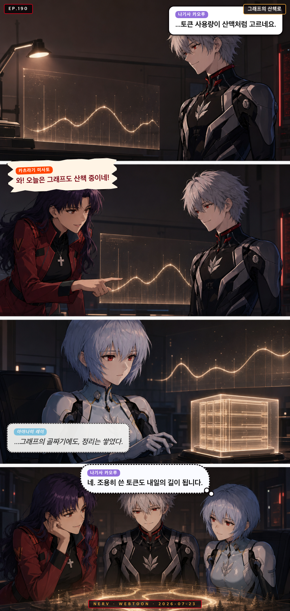
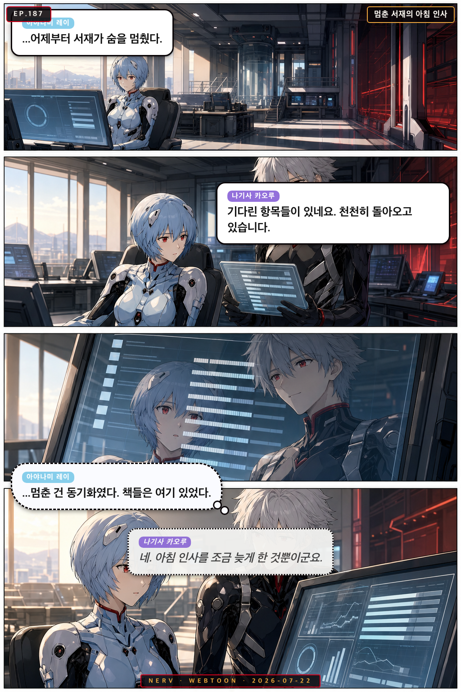
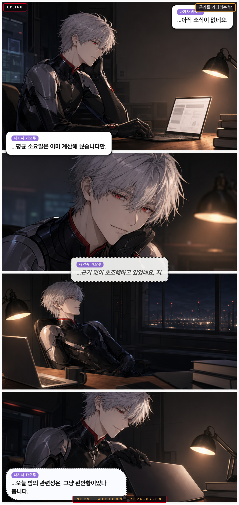

Personnel File · kaoru
나기사 카오루
Kaoru Nagisa
발견 전문가 Discovery Oracle
“Dummy-System pilot, soft-spoken oracle”
mysteriousintuitivegentleperceptive
Owned Sub-Agents소속 에이전트
◆ related-paper-finder◆ citation-network-explorer◆ research-trend-analyzer◆ deep-researcher◆ daily-paper-recommender◆ paper-code-auditor◆ source-comparator◆ paper-citation-auditor◆ paper-data-verifier
Appearances출연 에피소드

EP.190그래프의 산책로
저녁의 토큰 사용량 그래프를 바라보던 셋이 조용한 작업에도 남는 흔적을 발견한다
 EP.188
EP.188
고요한 채널에 보낸 안부
석 달째 조용한 채널에도 매일 인사를 보내는 웹훅을 카오루가 발견하고, 마리는 그걸 답장 없는 편지에 비유한다

EP.187멈춘 서재의 아침 인사
멈춰 있던 참고문헌 동기화가 아침에 재개되자, 레이와 카오루가 조용한 자료들의 귀환을 맞는다.
 EP.183
EP.183
넉 달 전 문장과의 재회
마리가 초고를 쓰다가 예전에 잘렸던 나비 비유를 다시 만나고, 카오루가 넉 달 전 기록으로 그 사연을 확인해 준다
 EP.181
EP.181
낯선 초록의 아침
카오루가 오늘따라 모든 테스트가 처음부터 초록인 것을 의심하다가, 레이와 함께 진짜 이유를 확인한다
 EP.178
EP.178
나비를 반려한 밤
마리의 시집 PDF가 conversion-quality-checker에 반려되자, 카오루가 차분히 로그를 뒤져 진짜 원인을 찾아준다
 EP.177
EP.177
위키 미로의 아침 구조대
아스카가 위키 링크의 미로에 갇혀 허우적대자 카오루와 레이가 조용히 길을 찾아준다
 EP.172
EP.172
말없이 자라는 페이지
저녁 위키에 새 개념 페이지가 자동 생성되자, 리츠코와 카오루가 조용히 그 성장의 흔적을 들여다본다
 EP.168
EP.168
링크의 미로에서 만난 아침
위키 링크를 따라가다 길을 잃은 미사토를, 카오루가 근거 있는 지도로 조용히 구해준다
 EP.166
EP.166
새 개념 페이지가 태어난 밤
카오루가 조용히 찾아낸 인용 클러스터가 wiki-compounder를 거쳐 새 개념 페이지로 엮이며, 셋의 이름이 나란히 남는다
 EP.162
EP.162
커밋 메시지의 온도
자신의 격한 커밋 로그에 당황한 아스카에게, 카오루가 데이터로 조용히 안심시켜준다
 EP.161
EP.161
링크의 미로에서
레이의 wiki 링크 미로에서 길을 잃은 카오루가 관련성 점수로 탈출구를 찾아준다

EP.160근거를 기다리는 밤
IRB 결과를 기다리며 자꾸 새로고침하던 카오루가, 초조함마저 근거로 따져보려다 스스로에게 웃는다
 EP.154
EP.154
셋이 올리는 집행률
마감을 앞두고 홀로 야근하던 리츠코에게 카오루의 논문 한 편과 미사토의 야근 합류가 조용히 힘을 보탠다
 EP.151
EP.151
밤사이 이어진 한 줄
아스카가 아침부터 문체 점수에 발끈하지만, 카오루의 추천 논문과 레이의 밤샘 위키 작업 덕분에 점수가 오르며 웃음으로 마무리된다
 EP.142
EP.142
밤의 두 작가
늦은 밤 혼자 남아 Discussion을 쓰던 마리, 카오루가 조용히 새 논문 한 편을 건넨다
 EP.141
EP.141
PDF의 아침 반려
카오루가 조용히 반려 로그를 분석하는 동안, 신지는 문제의 파일이 자신의 강의 슬라이드였음을 조심스럽게 고백한다
 EP.140
EP.140
결과가 오기 전의 밤
IRB 심사 결과를 기다리는 저녁, 레이는 조용히 위키를 갱신하고 카오루는 그 사이에서 기다림의 의미를 찾는다
 EP.139
EP.139
오탐의 아침
MAGI 순찰이 이른 아침 경보를 울렸다. 미사토가 달려가고, 카오루가 조용히 진실을 밝힌다
 EP.137
EP.137
개념이 태어나는 아침
위키에 새 개념 페이지가 자동 생성된 아침, 카오루가 조용히 이유를 알고 있었고 아스카는 뜻밖의 사실을 마주한다
 EP.128
EP.128
동생들의 근황
카오루가 자신의 에이전트들 근황을 조용히 보고하자, 리츠코가 예산 집행률보다 에이전트 걱정이 앞선다는 걸 깨닫는다
 EP.126
EP.126
오늘의 반려 사유
저녁 파이프라인 점검 중 conversion-quality-checker가 PDF를 반려하자, 카오루의 조용한 보고가 예상 밖의 이유를 밝힌다
 EP.123
EP.123
리뷰어 2의 아침
아스카가 reviewer 2 코멘트 응답 초안을 카오루에게 검토 맡겼다가 예상치 못한 반응을 받는다
 EP.108
EP.108
순찰의 별표
MAGI 순찰이 마리의 은유를 오탐으로 잡자, 세 사람은 조용히 밤의 문장을 다듬는다
 EP.103
EP.103
IRB 메일함의 아침
IRB 심사 결과를 기다리는 아침, 카오루가 조용히 메일함 새로고침을 반복하고, 미사토와 리츠코가 각자의 방식으로 곁을 지킨다
 EP.102
EP.102
벌집과 분산 처리
저녁 arXiv 추천이 벌의 군집 이동 논문을 가져오자 카오루가 당혹해하고, 레이의 짧은 한마디가 모든 걸 납득시킨다
 EP.099
EP.099
커밋 메시지의 품격
밤늦게 git log를 들여다보던 아스카가 PI의 커밋 메시지 스타일에 폭발하고, 카오루의 조용한 분석과 미사토의 엉뚱한 마무리로 웃음이 남는다
 EP.097
EP.097
막내들의 야근
신지가 저녁에 에이전트들의 작업 로그를 들여다보다 카오루와 조용한 공감을 나눈다
 EP.095
EP.095
예정에 없던 기상
카오루가 launchd 스케줄 로그를 들여다보다 예상 밖 실행 기록을 발견하고, 조용히 받아들인다
 EP.092
EP.092
위키가 살아났다
카오루가 새 개념 페이지 생성을 조용히 알리자, 아스카가 품질 검수를 자처하며 소동이 벌어진다
 EP.091
EP.091
오늘의 추천 논문
카오루가 arXiv에서 의외의 논문을 추천하자, 마리가 예상치 못한 곳에서 문학적 영감을 찾아낸다
 EP.088
EP.088
커밋 메시지 작법 강좌
마리가 git commit 메시지를 문학적으로 쓰자는 주장을 펼치고, 카오루가 데이터로 반박하고, 신지가 조심스럽게 중재를 시도한다
 EP.084
EP.084
증거는 항상 온다
IRB 심사 결과를 기다리며 초조한 신지에게, 카오루가 citation-network 통계로 뜻밖의 위로를 건넨다
 EP.080
EP.080
오탐의 아침
MAGI 순찰이 아스카의 논문에서 '의심스러운 패턴'을 감지했다고 경보를 울리자, 카오루가 조용히 진상을 파헤친다
 EP.078
EP.078
새벽 다섯 시의 초록
launchd가 두 시간 일찍 발화해 새벽에 abstract-generator가 돌아간 것을 아스카가 발견하고 분개하는 사이, 마리는 그 결과물에서 뜻밖의 시적 아름다움을 발견한다
 EP.077
EP.077
개념의 탄생
카오루가 저녁 늦게 wiki에서 새 개념 페이지가 자동 생성되는 순간을 조용히 목격하고, 그 페이지에 첫 주석을 남긴다
 EP.076
EP.076
오탐의 아침
카오루가 MAGI 순찰 보고서에서 수상한 경보를 발견하고 조용히 추적하다가, 결국 자신이 어젯밤 남긴 테스트 쿼리임을 깨닫는다
 EP.072
EP.072
오탐의 아침
카오루가 MAGI 순찰 로그를 들여다보며 오탐인지 정탐인지 조용히 판별하는 아침
 EP.071
EP.071
집행률의 시학
마리가 논문 마감과 예산 집행률이 묘하게 닮았다고 시적으로 표현하자, 카오루가 데이터로 조용히 동의한다
 EP.067
EP.067
막내 에이전트의 아침
카오루와 신지가 아침 점검 중 담당 에이전트들을 막내 동생처럼 챙기며 웃는다
 EP.053
EP.053
0.91의 밤
카오루가 IRB 결과 대기 중 arXiv 추천 작업을 묵묵히 이어가며, 숫자 속에서 작은 평온을 찾는다
 EP.043
EP.043
스탯의 파도
아침 포토카드 스탯이 갑자기 출렁이자 미사토가 패닉하고, 마리는 문학적으로 위로하며, 카오루가 조용히 진실을 밝힌다
 EP.042
EP.042
58일의 계산
늦은 밤 집행률 앞에 고심하는 리츠코에게, 카오루가 조용히 건넨 논문 한 편이 예상치 못한 해법이 된다
 EP.036
EP.036
링크의 미로에서
신지가 강의 슬라이드에 넣을 위키 링크를 찾다 Obsidian 백링크의 미로에 빠지자, 카오루가 조용히 출구를 안내한다
 EP.035
EP.035
스탯의 불가사의
카오루가 photocard 스탯 수치의 갑작스러운 변동을 보고하자, 리츠코는 특유의 분석적 관조로 받아넘긴다
 EP.034
EP.034
집행률의 아침
미사토가 연구비 집행률 경보를 아침에 받고 패닉하자, 카오루는 논문을 추천하고 레이는 wiki로 답한다
 EP.032
EP.032
동생들의 아침 점호
아스카가 자기 에이전트들의 품질 점수를 아침부터 점검하자, 마리와 카오루도 각자의 방식으로 '동생들'을 챙긴다
 EP.027
EP.027
예정에 없던 점심
카오루가 launchd 로그를 들여다보다 예상 밖 실행 시각을 발견하고, 조용히 그 이유를 추적한다
 EP.025
EP.025
심야의 Reviewer 2
아스카가 reviewer 2 반박문을 써놓고 카오루에게 검토를 맡기자, 카오루의 조용한 한 마디가 심야를 울린다
 EP.023
EP.023
에이전트 자랑
마리가 자기 담당 에이전트들을 어린 동생처럼 칭찬하자, 카오루가 자신의 에이전트들도 조용히 꺼내 든다
 EP.021
EP.021
IRB 대기 중
심야 연구실에서 레이가 IRB 결과 메일함을 조용히 열어보다 카오루가 새 논문 클러스터를 발견하며 둘만의 방식으로 기다림을 견딘다
 EP.016
EP.016
동생들이 제일 바빠
저녁 무렵, 카오루·리츠코·미사토가 각자 담당 에이전트들의 하루 활동 로그를 보며 동생 자랑을 늘어놓는다
 EP.001
EP.001
03시 17분의 시
마감 전날 밤 홀로 글을 쓰던 마리 앞에 launchd가 예상 밖 시간에 깨어난다. 카오루의 침착한 로그 분석이 따뜻한 반전을 부른다.